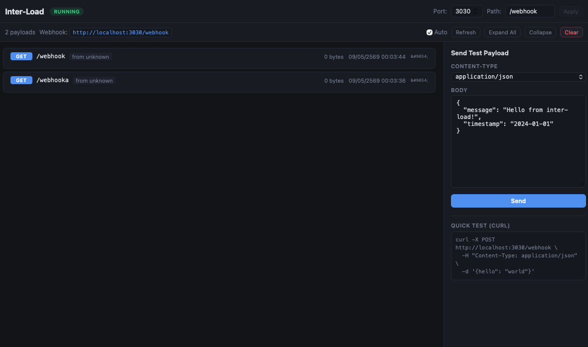

Desktop webhook inspector & forwarder that captures incoming payloads in real-time. See everything, transform anything, forward anywhere.

Runs a local HTTP server that accepts GET, POST, PUT, PATCH, DELETE — receives everything, no questions asked. Configurable port and path.
See HTTP method, path, source IP, headers, and body with Pretty/Minified/Raw toggle. JSON auto-formatted for readability.
Remap payload keys, add custom headers, preview before sending, and forward to any endpoint with your chosen HTTP method.
Save forward rules for reuse. Auto-forward matching payloads without manual triggers — set it and forget it.
Export captured payloads as JSON or CSV for further analysis, sharing, or integration with other tools.
Toggle between dark and light modes. Your eyes, your choice. Also supports WebSocket interception.
Inter-Load starts a local HTTP server on port 3030 (configurable) ready to receive webhooks.
Set your third-party service's webhook URL to http://your-ip:3030/webhook using ngrok or similar tunnel.
Payloads appear instantly in the UI with full headers, body, and metadata. Filter and search through them.
Remap keys, add headers, and forward the transformed payload to your actual API endpoint.
Free & open source. Available for all major platforms.
Apple Silicon (M1/M2/M3/M4) & Intel
Opens .dmg — drag to Applications.
If "damaged" warning appears, run:xattr -cr /Applications/inter-load.app
x64 (.msi installer)
Run the .msi installer.
If SmartScreen warns, click "More info" → "Run anyway".
x64 (.AppImage & .deb)
AppImage: chmod +x && ./inter-load
.deb: sudo dpkg -i inter-load.deb